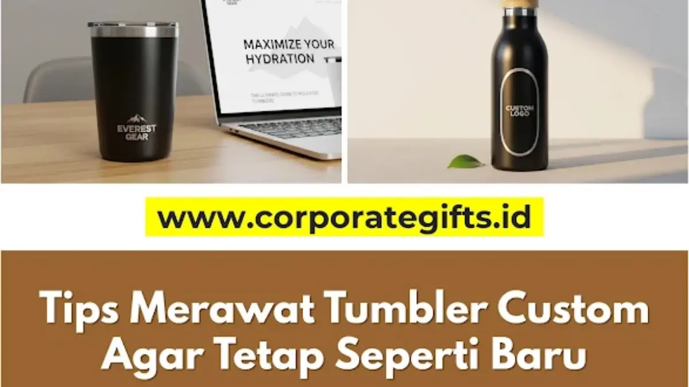

Corporate Gifts ID - Cara merawat tumbler custom agar tetap awet adalah dengan mencucinya secara manual menggunakan tangan (bukan mesin pencuci piring), membersihkan noda kopi dan teh dengan baking soda, menghilangkan bau apek dengan cuka putih, serta selalu mengeringkannya sepenuhnya sebelum disimpan dengan tutup terbuka. Kelima langkah ini menjaga logo custom tetap awet, tumbler tetap higienis, dan investasi souvenir kantor Anda bertahan lebih lama.
Poin Kunci Perawatan Tumbler Custom:
- Metode Pencucian: Wajib cuci tangan manual, hindari dishwasher agar lapisan coating dan print UV tidak terkelupas.
- Alat Pembersih: Gunakan sisi spons halus untuk bodi luar dan sikat botol silikon panjang untuk dinding dalam.
- Penghilang Noda & Bau: Manfaatkan pasta baking soda untuk noda tanin kopi/teh dan larutan cuka putih/lemon untuk netralisasi aroma.
- Penyimpanan Higienis: Keringkan terbalik di rak piring dan simpan tanpa menutup rapat agar sirkulasi udara bebas jamur.
Pentingnya Merawat Tumbler Custom Perusahaan
Tumbler custom dengan desain menarik dan logo perusahaan yang tercetak sempurna sering kali kehilangan tampilan primanya hanya karena noda membandel atau aroma minuman yang sulit hilang. Padahal, merawat tumbler custom berbahan stainless steel food grade 304 sebenarnya sangat mudah asalkan mengikuti prosedur yang benar.
Dengan pemeliharaan rutin yang tepat, tumbler tidak hanya menjadi sarana hidrasi harian yang higienis, tetapi juga menjaga citra brand korporat tetap elegan di meja kerja klien maupun karyawan. Berikut lima tips merawat tumbler custom agar tetap awet, higienis, dan logonya tidak cepat rusak.
1. Cuci Manual dengan Tangan, Jauhi Mesin Pencuci Piring
Ini adalah aturan paling fundamental dalam merawat tumbler custom. Meskipun mesin pencuci piring (dishwasher) terdengar sangat praktis, suhu air yang terlampau tinggi dan semprotan deterjen keras di dalamnya justru menjadi musuh utama bagi sebagian besar tumbler promosi karena beberapa alasan berikut:
- Merusak Lapisan Cat Coating: Panas ekstrem mesin dapat menyebabkan lapisan cat doff (matte) atau glossy pada bodi tumbler mengelupas atau melepuh.
- Merusak Sablon & Print UV Logo: Tekanan semprotan air panas berulang akan memudarkan pigmen warna tinta sablon dan mengikis hasil cetak UV.
- Merusak Ruang Vakum: Siklus pemanasan tinggi berisiko melonggarkan segel lem vakum pada leher tumbler, sehingga kemampuan menahan suhu panas/dingin menurun drastis.
Solusi: Selalu cuci tumbler custom Anda secara manual menggunakan air mengalir bersuhu suam-suam kuku dan sabun cuci piring lembut.
2. Gunakan Peralatan yang Tepat: Spons Lembut dan Sikat Botol
Jangan samakan cara membersihkan tumbler dengan membersihkan wajan gosong. Gunakan alat yang sesuai dan bedakan penanganan untuk area luar serta dalam botol:
- Untuk Bagian Luar (Area Logo): Gunakan sisi spons yang lembut (berwarna kuning), bukan bagian sabut hijau yang kasar. Ini adalah kunci utama menjaga logo hasil cetak tetap mulus. Dilarang keras menggunakan sabut kawat atau sikat kasar karena akan menimbulkan goresan permanen pada lapisan bodi.
- Untuk Bagian Dalam: Gunakan sikat botol bergagang panjang berbahan busa lembut atau silikon agar dapat menjangkau seluruh dinding dalam hingga sudut dasar tanpa menggores logam stainless steel.

Penggunaan spons busa lembut dan sikat botol khusus menjaga permukaan logo tetap mulus dan bagian dalam tumbler tetap higienis.
3. Basmi Noda Kopi dan Teh dengan Baking Soda
Noda kecoklatan dari zat tanin kopi pekat atau teh manis di bagian dalam tumbler stainless steel sering kali tidak mempan dibersihkan dengan sabun cuci biasa. Anda tidak perlu menggunakan pemutih kimia berbahaya, cukup gunakan bahan dapur alami:
- Buat pasta pembersih dengan mencampurkan 1 hingga 2 sendok teh baking soda (natrium bikarbonat) dengan sedikit air hangat.
- Oleskan pasta tersebut secara merata ke area yang bernoda di dinding dalam tumbler.
- Diamkan selama 15 hingga 20 menit agar formula baking soda melunakkan kerak noda.
- Gosok perlahan menggunakan sikat botol silikon, lalu bilas menggunakan air bersih yang mengalir. Baking soda merupakan pembersih abrasif lembut alami yang efektif mengangkat kerak tanpa merusak lapisan pasivasi logam.
4. Hilangkan Bau Apek dengan Cuka Putih atau Sari Lemon
Aroma tidak sedap pada tumbler biasanya disebabkan oleh sisa minuman manis atau susu yang terperangkap dalam pori-pori mikro dan memicu perkembangbiakan bakteri. Untuk menetralkan bau membandel:
- Isi tumbler sekitar seperempat bagian dengan cuka putih suling atau perasan air lemon segar.
- Tambahkan air hangat hingga botol terisi penuh.
- Tutup rapat, kocok perlahan selama beberapa detik, lalu diamkan selama 30 hingga 45 menit.
- Buang cairan larutan, lalu bilas botol beberapa kali menggunakan air mengalir hingga aroma asam cuka hilang sepenuhnya. Kandungan asam asetat alami pada cuka sangat efektif membasmi mikroorganisme pembawa bau apek.
5. Keringkan Sepenuhnya dan Simpan dalam Keadaan Terbuka
Ini merupakan langkah pencegahan paling krusial untuk mencegah bau apek dan jamur muncul kembali. Lingkungan yang lembap dan kedap udara adalah tempat paling ideal bagi jamur untuk berkembang biak:
- Tiriskan Terbalik: Setelah dicuci bersih, keringkan tumbler dengan memosisikannya terbalik di atas rak pengering piring berventilasi baik.
- Pastikan Kering Sempurna: Pastikan ruang dinding dalam dan rongga tutup sudah kering total sebelum botol dimasukkan ke lemari penyimpanan.
- Simpan Tanpa Menutup Rapat: Simpan tumbler dengan tutup terlepas atau dipasang sedikit longgar. Sirkulasi udara segar yang lancar akan mencegah pengembunan dan bau apek.
Tabel Panduan Do & Don't Perawatan Tumbler Custom
Berikut rangkuman panduan teknis yang wajib diperhatikan untuk menjaga performa fisik dan fungsional tumbler souvenir kantor Anda:
| Aspek Perawatan | Yang Sangat Dianjurkan (Do) | Yang Wajib Dihindari (Don't) |
|---|---|---|
| Metode Pencucian | Cuci manual dengan tangan menggunakan air suam kuku dan sabun cair lembut. | Menggunakan mesin cuci piring (dishwasher) bersuhu tinggi. |
| Peralatan Pembersih | Busa spons kuning lembut dan sikat botol silikon bergagang panjang. | Sabut hijau kasar, sikat kawat baja, atau pembersih abrasif keras. |
| Pembersih Noda & Bau | Pasta baking soda, larutan cuka putih, atau perasan air lemon alami. | Cairan pemutih (bleach), klorin, atau cairan pembersih berbahan asam keras. |
| Perawatan Karet Seal | Lepas karet seal secara berkala, cuci dengan sikat kecil lembut, dan keringkan. | Merendam karet seal dalam air mendidih terlalu lama yang berisiko memicu deformasi. |
| Penyimpanan | Simpan dalam kondisi kering total dengan tutup terbuka atau sedikit renggang. | Menutup rapat tumbler saat bagian dalam masih lembap atau basah. |
Dengan menerapkan kebiasaan perawatan sederhana ini, Anda dapat memastikan tumbler custom logo Anda selalu dalam kondisi terbaik. Perawatan yang baik tidak hanya menjaga kebersihan dan kesehatan penggunanya, tetapi juga memastikan investasi branding pada paket souvenir promosi perusahaan terus memberikan kesan positif dan prestisius dalam jangka panjang.
Pertanyaan Seputar Perawatan Tumbler Custom (FAQ)

Ditulis oleh: Vendor Souvenir Kantor
Tim Teknis Produksi & Spesialis Pengadaan Resmi B2BSpesialis teknis produksi dan kurasi merchandise korporat di CorporateGifts.ID. Berpengalaman dalam pengujian material stainless steel food grade, teknik cetak UV/laser, dan standar kontrol kualitas souvenir kantor di Indonesia.
Lihat Profil Lengkap & Panduan Lainnya